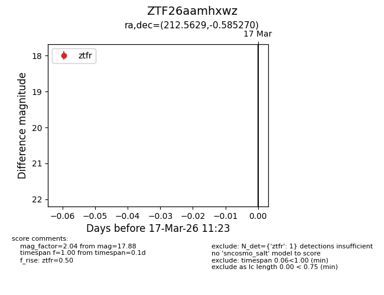
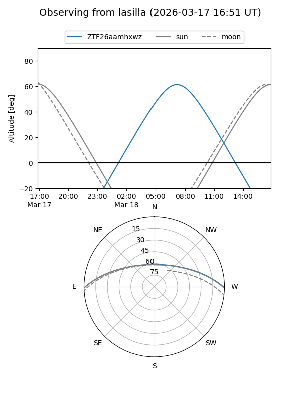
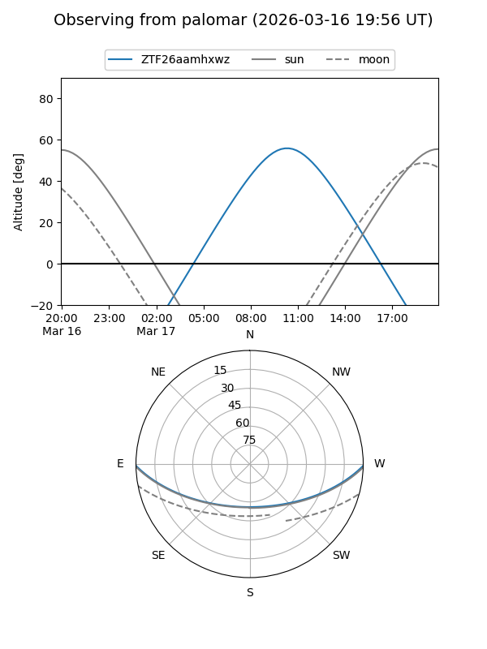

ZTF26aamhxwz
Target ZTF26aamhxwz at 2026-03-17 11:25
Aliases and brokers:
FINK: link
Lasair: link
ALeRCE: link
alt names
ZTF26aamhxwz (ztf,fink_ztf)
Coordinates:
equatorial (ra, dec) = 212.5629,-0.58527
equatorial (HMS+DMS) = 14:10:15.09,-00:35:06.97
galactic (l, b) = (340.4954,+56.42663)
Flags:
Photometry:
last ztfr=17.88
1 ztfr detections
Lightcurve

Visibility


Additional plots